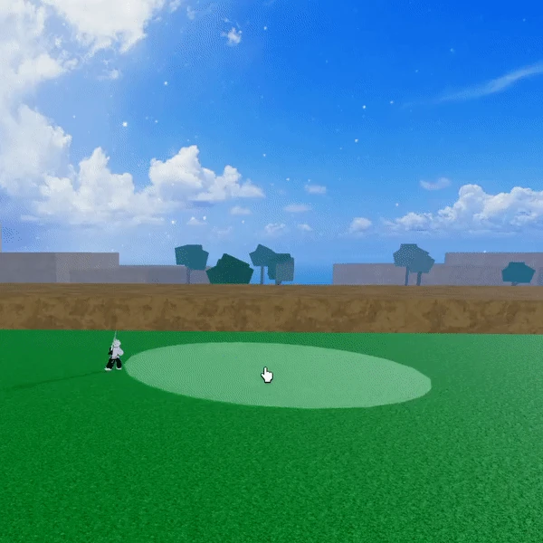
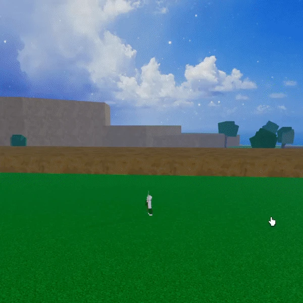
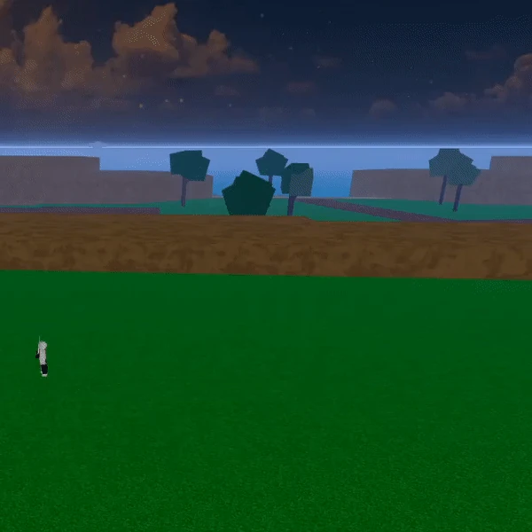

HOME
HOME
Spike is a Common Natural-type Blox Fruit that costs $180,000 or RB 380 from the Blox Fruit Dealer.
Spike is not recommended for PvP due to its lack of mobility and combos. It is recommended to use better fruits, such as Elemental fruits like Smoke or Flame. However, it is recommended for grinding in the early First Sea, as its moves are AoE.

The user summons multiple spikes at the location of their cursor. Holding the ability causes the spikes to increase in size.
The user rotates their arms in a spinning motion, inflicting damage. The longer the move is held, the greater the amount of damage it deals.
The user transforms into a spiky ball, pulling enemies along as they move. This move shares characteristics with Dough's F move.
The user conjures a row of spikes in the direction they are facing. The size of the spikes increases the longer the ability is held.
